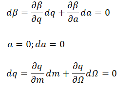
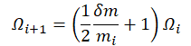

PhaseScanII
Description
This process scans the phase of main RF to reach a constant β equal m/z increment scan from frequency to another frequency.

To meet the above condition, the formula of 𝛺 can be presented as

where the Ω𝑖 and the 𝑚𝑖 denotes frequency and targeting m/z at the 𝑖th step, and the 𝛿𝑚 denotes increment of targeting m/z. To edit the process of PhaseScanII, it should meets the following syntax.
Syntax
PhaseScanII( AuxWfmType, AuxStart, iAuxCyc, AuxCyc, Beta, BetaScale, AuxAmp, AuxPulse1, AuxPulse2, AuxPulseAmp, dm, Freq, StepWidth )
0 | Cosine based
1 | Square wave
2 | Double pulses for each cycle
3 | Arb wave, described by a process named UpdAuxArbPulses
It determines the type of the auxilary waveform.
The auxiliary waveform starts after a number of the RF conjunction for a step.
The initial cycle of the auxiliary waveform.
The number of the cycle of the auxiliary waveform for a step.
The Beta value used to define the auxiliary AC frequency and m/z scale of the acquired mass spectra.
It defines the actual ratio (R) between auxiliary frequency and main RF frequency by R = Beta * BetaScale / 2.
It defines auxiliary waveform amplitude.
The array denotes the beginning and ending auxiliary AC cycles of the first pulse.
The array denotes the beginning and ending auxiliary AC cycles of the second pulse.
The array denotes the amplitudes of AuxPulses.
It defines the increment/decrement of m/z between steps.
The array denotes the initial RF frequency and the final RF frequency of main RF phase scan.
Number of the RF conjunction. This number defines the width of a step.